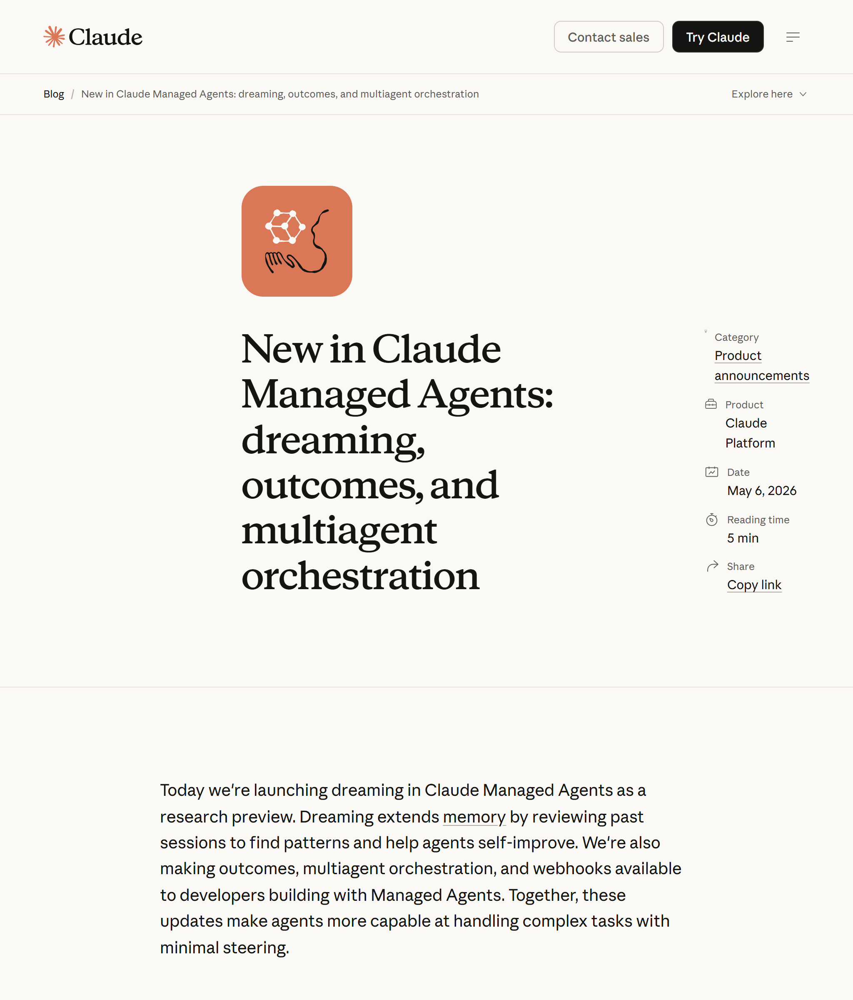
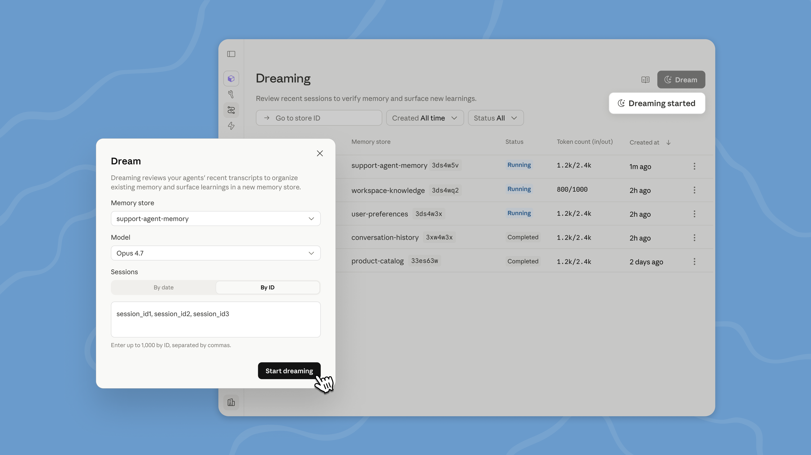

claude.com/blog/new-in-claude-managed-agents

CODE WITH CLAUDE · MAY 6 2026
LIVE FROM CODE WITH CLAUDE
Anthropic just made Claude agents
DREAM.
THE HEADLINE
But the headline isn't dreaming.
0
shipped today
1
is gated
Can you guess which?
THE LINE-UP
Because here's the line-up.
Dreaming
RESEARCH PREVIEW
Outcomes
PUBLIC BETA
Multiagent
PUBLIC BETA
Webhooks
PUBLIC BETA
One, the named flagship, is
research preview only.
That's the twist.
DREAMING · GATED
First, dreaming. The gated one.
RESEARCH PREVIEW

Sessions
Reviews past runs
Patterns
Extracts insights
Memories
Curates for next run
Sleep-time learning, basically.
MOST OF YOU CAN'T TOUCH IT YET
REQUEST ACCESS → claude.com/form/claude-managed-agents
OUTCOMES · PUBLIC BETA
Then there's outcomes.
LIVE TODAY
📋
Write a rubric
🔍
Separate grader checks output
✗
Pass 1 — below bar
+0
POINTS TASK SUCCESS VS STANDARD PROMPTING
Stop eyeballing drafts.
MULTIAGENT ORCHESTRATION · PUBLIC BETA
And while one agent grades, another delegates.
LIVE TODAY
🤖
Lead Agent
Harvey Legal
Netflix Analysis
Shared Filesystem
Own Tools
0×
HARVEY COMPLETION RATE (VS BASELINE)
"That's not a demo number. That's a legal-AI production deployment."
WEBHOOKS · PUBLIC BETA
Plus webhooks, to know the moment work is done.
Polling
GET /status → pending
GET /status → pending
GET /status → done!
Webhook
🔔
Single notification
Stop polling. Subscribe to a webhook.
INDUSTRY SAID: "Finally, no more polling loops."
HERE'S WHY THIS LANDS
Here's why this lands.
SDK BETA HEADER
"The orchestration layer is where the real moat lives."
— anonymous community reaction, ~31 min after announcement
AVAILABLE TODAY
Is Anthropic about to lock in the production-agent moat, or did dreaming get gated for a reason?
💬 Let me know in the comments
Subscribe →
claude.com/form/claude-managed-agents
✓ SHIPPED